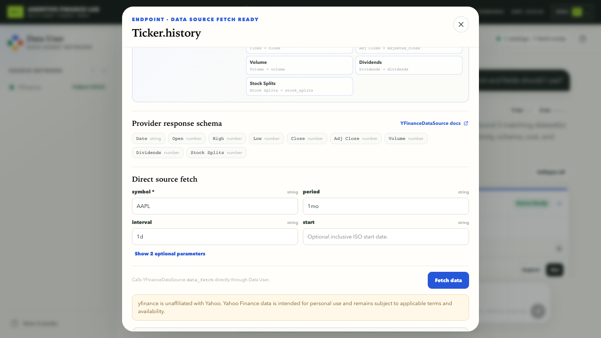
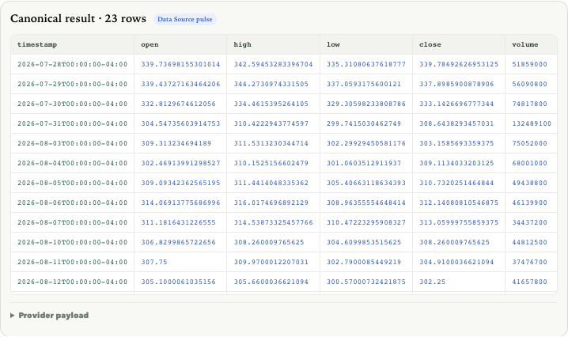

1 Choose a source
Data User asks.
Consultant recommends YFinance from catalog documentation.

It needs clear owners.
Consultant recommends YFinance from catalog documentation.
yfinance.ticker.historySource and endpoint stay visible.

data_fetch • AAPL • 1mo • 1d

Captured from YFinance only.

Clear owner. Visible handoff.